from matplotlib import pyplot as plt
# change style to default
plt.style.use('default')Data Visualization
Matplotlib
Matplotlib is the main plotting library in Python. It is a very powerful tool for creating high-quality plots and figures.
More informations can be found under https://matplotlib.org/
Components of Matplotlib Figure:

Global settings
import matplotlib as mpl
mpl.rcParams['font.size'] = 20
mpl.rcParams['lines.linewidth'] = 2
mpl.rcParams['lines.linestyle'] = '-'
mpl.rcParams['figure.figsize'] = (3,3)Figure
fig = plt.figure()
plt.xlabel('x') # x label
plt.ylabel('y') # y label
plt.title('Title') # title
# plot line with x and y data , label for legend
plt.plot([1, 2, 3], [4, 5, 6], label='line1')
plt.xlim(0, 4) # x axis limits
plt.ylim(4, 6) # y axis limits
plt.xticks([1, 2, 3, 4]) # x axis ticks
plt.yticks([ 4, 5, 6]) # y axis ticks
plt.grid(True) # show grid
plt.legend() # show legend
plt.show() 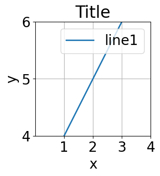
Axes
fig, ax = plt.subplots()
ax.set_xlabel('x')
ax.set_ylabel('y')
ax.set_title('Title')
ax.plot([1, 2, 3], [4, 5, 6], label='line1')
ax.set_xlim(0, 4)
ax.set_ylim(4, 6)
ax.set_xticks([1, 2, 3, 4])
ax.set_yticks([ 4, 5, 6])
ax.legend()
plt.show()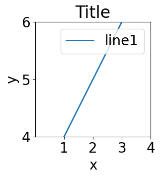
Use different styles
You can use different styles for your plots. The following code shows how to use the ggplot style.
plt.style.use('ggplot')fig = plt.figure()
plt.xlabel('x')
plt.ylabel('y')
plt.title('Title')
plt.plot([1, 2, 3], [4, 5, 6], label='line1')
plt.xlim(0, 4)
plt.ylim(4, 6)
plt.xticks([1, 2, 3, 4])
plt.yticks([ 4, 5, 6])
plt.grid(True)
plt.legend()
plt.show()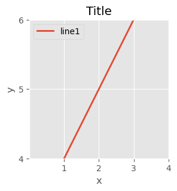
Other style can be found under https://matplotlib.org/stable/gallery/style_sheets/style_sheets_reference.html
Subplots
You can create subplots in a figure. The following code shows how to create a figure with 2x2 subplots.
plt.style.use('default')fig, axes = plt.subplots(2, 2, sharex=False, sharey=False, figsize=(5, 5),gridspec_kw={'hspace': 0.3, 'wspace': 0.2})
axes[0, 0].set_title('Title 1')
axes[0, 0].plot([1, 2, 3], [4, 5, 6], label='line1')
axes[0, 0].set_xlim(0, 4)
axes[0, 0].set_ylim(4, 6)
axes[0, 0].set_xticks([1, 2, 3, 4])
axes[0, 0].set_yticks([ 4, 5, 6])
axes[0, 0].legend()
axes[0, 1].set_title('Title 2')
axes[0, 1].plot([1, 2, 3], [-4, -5, -6], label='line1')
axes[0, 1].set_xlim(0, 4)
axes[0, 1].set_ylim(-6,-4)
axes[0, 1].set_xticks([1, 2, 3, 4])
axes[0, 1].set_yticks([ -4, -5, -6])
axes[0, 1].legend()
axes[1, 0].set_title('Title 3')
axes[1, 0].plot([-1, -2, -3], [4, 5, 6], label='line1')
axes[1, 0].set_xlim(-4,0)
axes[1, 0].set_ylim(4, 6)
axes[1, 0].set_xticks([-1, -2, -3, -4])
axes[1, 0].set_yticks([ 4, 5, 6])
axes[1, 0].legend()
axes[1, 1].set_title('Title 4')
axes[1, 1].plot([-1, -2, -3], [-4, -5, -6], label='line1')
axes[1, 1].set_xlim(-4,0)
axes[1, 1].set_ylim( -6,-4)
axes[1, 1].set_xticks([-1, -2, -3, -4])
axes[1, 1].set_yticks([ -4,- 5, -6])
axes[1, 1].legend()
plt.show()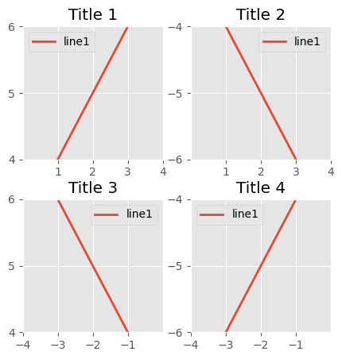
You can also use gridspec to create subplots.
from matplotlib.gridspec import GridSpec
fig = plt.figure()
gs = GridSpec(2,2 ,width_ratios=[1, 2], height_ratios=[4, 1])
ax1 = fig.add_subplot(gs[0, 0])
ax2 = fig.add_subplot(gs[0, 1])
ax3 = fig.add_subplot(gs[1, 0])
ax4 = fig.add_subplot(gs[1, 1])
fig.suptitle('Title') # title for the entire figure
for i,ax in enumerate(fig.get_axes()):
ax.set(xlabel='x', ylabel='y')
ax.plot([1, 2, 3], [4, 5, 6],label = "ax%d" %i)
plt.show()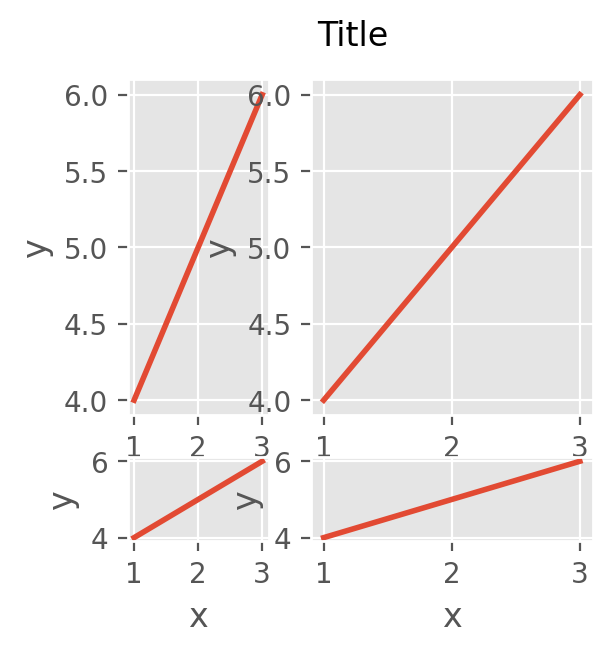
Colors and Color maps
Matplotlib provides a large number of color maps. Here your can find a list of all available color maps: https://matplotlib.org/stable/tutorials/colors/colormaps.html and colors: https://matplotlib.org/stable/tutorials/colors/colors.html and https://matplotlib.org/stable/gallery/color/named_colors.html.
Texts and Annotations
import numpy as np
x = [0.2,0.4,0.6,0.8,1.0]
y = [0.2,0.4,0.6,0.8,1.0]
plt.text(0.5, 0.5, 'This is a text!', fontsize=12, ha='center')
plt.annotate('Data!', xy=(0.2, 0.2), xytext=(0.5, 0.4),arrowprops=dict(facecolor='black', shrink=0.05))
plt.scatter(x,y, color='red',marker='x',s=100)
plt.xlabel(r'$x$ / mm') # using LaTeX syntax
plt.ylabel(r'$\frac{y}{z}$ / mm$^{-1}$') # using LaTeX syntax
plt.show()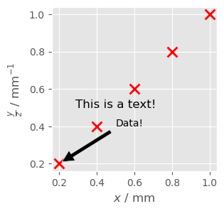
Logarithmic scale
y = np.random.normal(loc=0.5,scale=0.4,size=10000)
y = y[(y > 0) & (y < 1)]
y.sort()
x = np.arange(len(y))
plt.figure()
# linear
plt.subplot(221)
plt.plot(x, y)
plt.yscale('linear')
plt.title('linear')
plt.grid(True)
# log
plt.subplot(222)
plt.plot(x, y)
plt.yscale('log')
plt.title('log')
plt.grid(True)
# symmetric log
plt.subplot(223)
plt.plot(x, y - y.mean())
plt.yscale('symlog', linthresh=0.01)
plt.title('symlog')
plt.grid(True)
# logit
plt.subplot(224)
plt.plot(x, y)
plt.yscale('logit')
plt.title('logit')
plt.grid(True)
# Adjust the subplot layout, because the logit one may take more space
# than usual, due to y-tick labels like "1 - 10^{-3}"
plt.subplots_adjust(top=0.92, bottom=0.08, left=0.10, right=0.95, hspace=0.25,
wspace=0.35)
plt.show()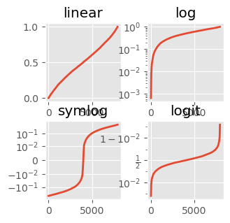
Scatter / Line plot
import numpy as np
x = np.array([1, 2, 3, 4, 5])
y = np.array([1, 4, 9, 16, 25])
y2 = y + 10plt.scatter(x, y, s=100, c='green', edgecolor='black', linewidth=1, alpha=0.75, marker='o', label='scatter')
plt.plot(x, y2, color='red', marker='o', markersize=10, markerfacecolor='blue', linestyle='--', linewidth=2,label='line')
plt.legend()
plt.show()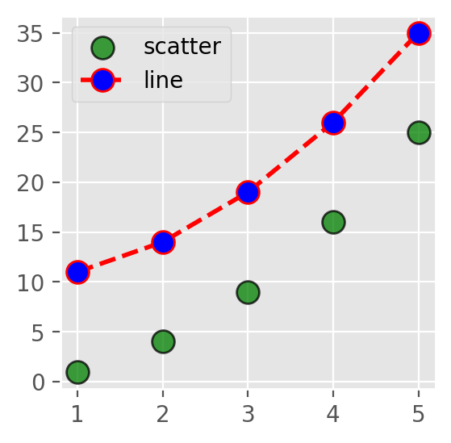
Error bars
plt.style.use('default')
plt.errorbar(x, y, yerr=5, fmt='o', color='black', ecolor='lightgray', elinewidth=3, capsize=10)
# fmt is the format of the marker, ecolor is the color of the error bar, elinewidth is the width of the error bar line, capsize is the size of the error bar cap
plt.show()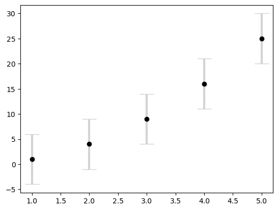
Save figure
x = np.linspace(0, 2 * np.pi, 100)
y = np.sin(x)
fig, ax = plt.subplots()
ax.plot(x, y, label='line1')
# bbox_inches is the bounding box in inches.
# If 'tight', it will fit the figure to the plot area.
plt.savefig('../data/test.png', dpi=300, bbox_inches='tight')
plt.show()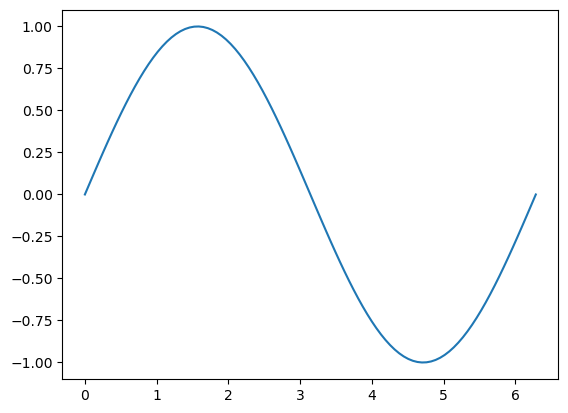
Histogram
x = np.linspace(0, 200,1000)
y = np.random.normal(0,1,1000)
fig, ax = plt.subplots()
ax.hist(y, bins=30, color='lightblue', edgecolor='black')
plt.show()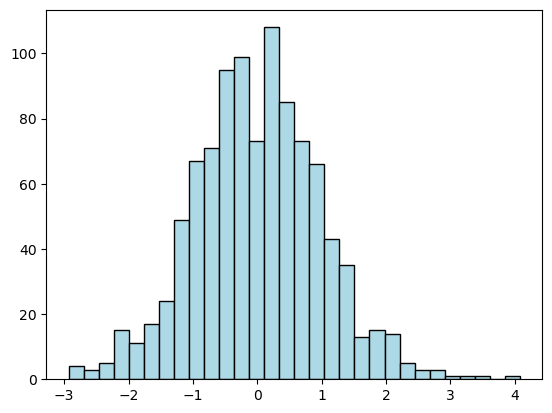
# 2D histogram
x = np.random.normal(0,1,1000)
y = np.random.normal(0,1,1000)
plt.hist2d(x, y, bins=30, cmap='Blues')
colorbar = plt.colorbar()
colorbar.set_label('counts in bin')
plt.show()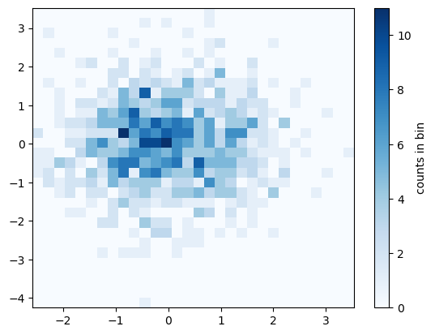
Density plot
x = np.linspace(0, 100, 1000)
y = np.linspace(0, 100, 1000)*2
# Create a 2D array of shape (1000,1000)
X, Y = np.meshgrid(x, y)
# Z is a 2D array of shape (1000,1000)
Z = np.sin(X) + np.cos(Y)
print("Shape of X:", X.shape)
print("Shape of Y:", Y.shape)
print("Shape of Z:", Z.shape)Shape of X: (1000, 1000)
Shape of Y: (1000, 1000)
Shape of Z: (1000, 1000)fig, ax = plt.subplots()
# Create a contour plot
plt.contour(X, Y, Z, 20, cmap='RdGy')
plt.colorbar()
plt.show()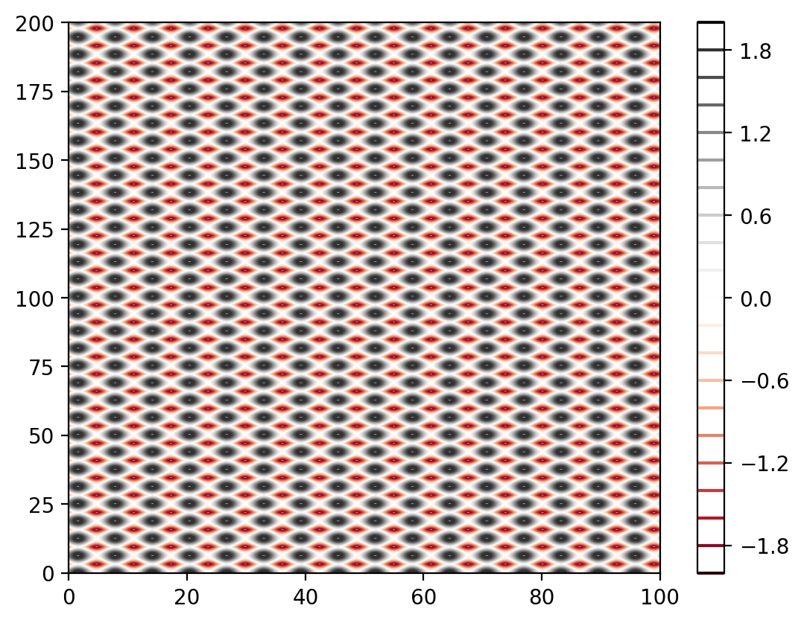
# 2D grid is interpreted as an image with imshow
plt.imshow(Z, extent=[0, 100, 0, 100], origin='lower', cmap='RdGy')
plt.colorbar()
plt.show()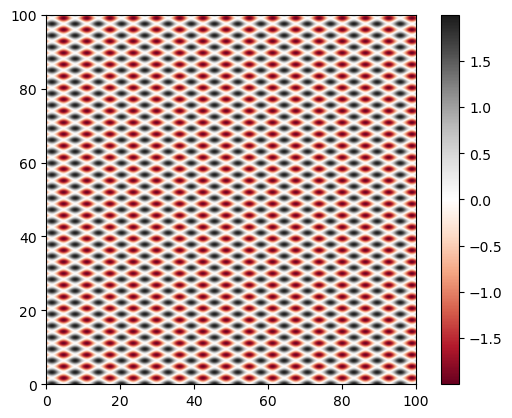
# contour plot with labels
X = np.linspace(-5, 5, 100)
Y = np.linspace(-5, 5, 100)
X, Y = np.meshgrid(X, Y)
Z = np.sin(np.sqrt(X**2 + Y**2))
contours = plt.contour(X,Y,Z,3, colors='black') # plt.contour([X,Y],Z,[levels])
plt.clabel(contours, inline=True, fontsize=6)<a list of 16 text.Text objects>
Seaborn
Searborn is based on Matplotliband is made for statistical graphics. It is comparable with R’s ggplot2 library.
It works best with Pandas DataFrames. You can easly create complex plots with only a few lines of code by grouping and aggregating data.
More informations can be found under https://seaborn.pydata.org/
import seaborn as snsExample
# Use the default data set from seaborn
tips = sns.load_dataset('tips')
# Create a boxplot
sns.boxplot(x='day', y='total_bill', data=tips)<Axes: xlabel='day', ylabel='total_bill'>
import matplotlib.pyplot as plt
import seaborn as sns
sns.set_theme(style="darkgrid")
iris = sns.load_dataset("iris")
# Set up the figure
f, ax = plt.subplots(figsize=(8, 8))
ax.set_aspect("equal")
# Draw a contour plot to represent each bivariate density
sns.kdeplot(
data=iris.query("species != 'versicolor'"),
x="sepal_width",
y="sepal_length",
hue="species",
thresh=.1,
)<Axes: xlabel='sepal_width', ylabel='sepal_length'>
3D plots
Matplotlib can also be used to create 3D plots but it is not the best tool for this.
from mpl_toolkits.mplot3d import Axes3D
import matplotlib.pyplot as plt
import numpy as np
fig = plt.figure(figsize=(5, 5))
ax = fig.add_subplot(111, projection='3d')
x = np.random.standard_normal(100)
y = np.random.standard_normal(100)
z = np.random.standard_normal(100)
ax.scatter(x, y, z, c='r', marker='o')
ax.set_xlabel('X Label')
ax.set_ylabel('Y Label')
ax.set_zlabel('Z Label')
plt.tight_layout() # adjust the plot to the figure
plt.show()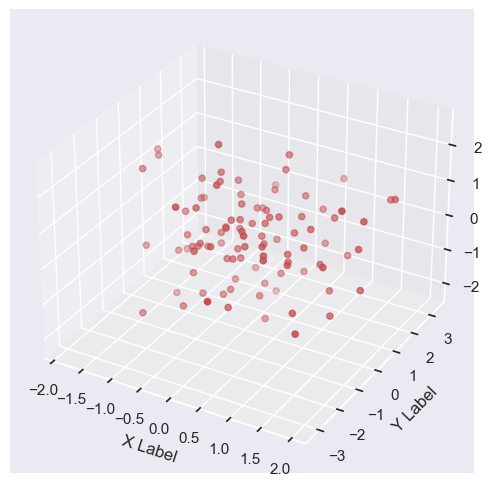
Better tools for 3D plots are Mayavi and Plotly.